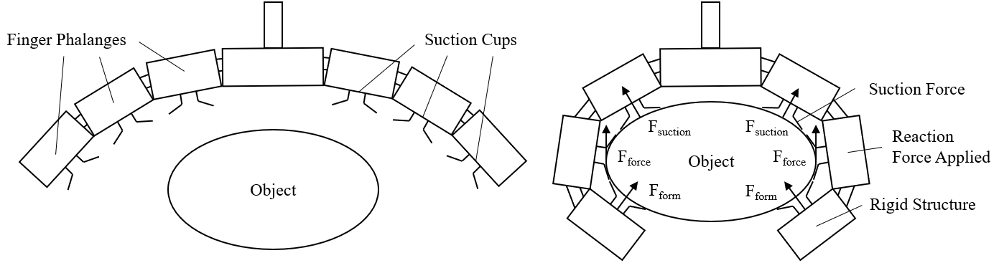

The field of robotic grasping relies on a strong foundation of kinematic, mechanics and mechanism theory. Research into novel robotic designs has only seen an active history over the last 50 years. Cornerstone works such as the Stanford/JPL hand in 1987 and Utah/MIT hand in 1984 demonstrated robotic grasping’s potential alongside creating a new benchmark for performance. The years since have seen a multitude of novel designs from industry and research. Nevertheless, these designs fundamental kinematics and mechanics principles remain the same. Consequently, any research in this domain must understand these principles through the lenses of current grasping technologies, notable end-effector designs and surrounding work concerning grasping.
Fundamental to grasping an object is providing sufficient force to sustain an objects weight such that it is in equilibrium, or equilibrium grasp. Fingered grasping uses two main approaches to achieve this: force closure and form closure. These approaches are used in a variety of finger arrangements; this can range from simple two or three fingered grippers to anthropomorphic five fingered grippers.
Suction grasping employs the adhering force generated by the negative fluid pressure of air to grasp objects. To do this a suction cup is connected to a partial vacuum. The figure above demonstrates how this works, the partial vacuum created within the suction cup creates a pressure difference. As a result, the higher atmospheric pressure exerts a force on the surface covered by the cup thereby grasping the object.
These graspers employ a singular mass filled with a fluid and rigid granules or skeleton structure. These masses envelope the object and then evacuate the internal fluid, leaving the rigid internals wrapped around the object, forming a secure grasp.
‘Cartman’ was the winning submissions in the 2017 Amazon Picking Challenge. The end-effector used had two ends, one equipped with a suction cup and the other with a parallel grasper. A central servo motor then spun the end-effector ends depending on the mode of grasping chosen by the planning algoritm.
The Shadow Dexterous Hand is often considered one of the most advanced anthropomorphic end-effector designs. The design provides 20 degrees of freedom and therefore precise positional control. This is achieved through a compactly designed tendon and pulley system, where tendons are driven by a servo motor embedded into the forearm of the device.
The RightHand Robotics GripperV5 uses three fingered grasping and a suction cup within the palm of the end-effector. In practise the suction cup extends from the palm toward the object and creates a seal with the objects surface. The suction cup along with the now grasped object is then retracted to the position seen in and the soft fingers than wrap around the object.
The confluence of these ideas ultimately saw the placement of multiple suction cups on the inner side of a finger allows for force, form and suction grasping methods to be used at once. The figure below demonstrates this concept, the negative fluid pressure of air generated by the suction cups exerts a force that pulls the object into the phalanges of the finger. As the finger mechanism actuates, the flanges exert a reaction force normal to the contact point which is then compounded by the aforementioned suction force. This results in a large reaction force at the contact points with the object and as a result generates a greater frictional force, preventing the object from slipping out of the grasp. Finally, once the finger mechanism is immobilised it acts as a rigid supporting structure around the object.
With this preliminary decision made a subsequent optimisation process was undertaken (read more features). This involved the identification of key features of an end-effector’s design that could maximise the mechanical benefits of using suction and fingered grasping concurrently.